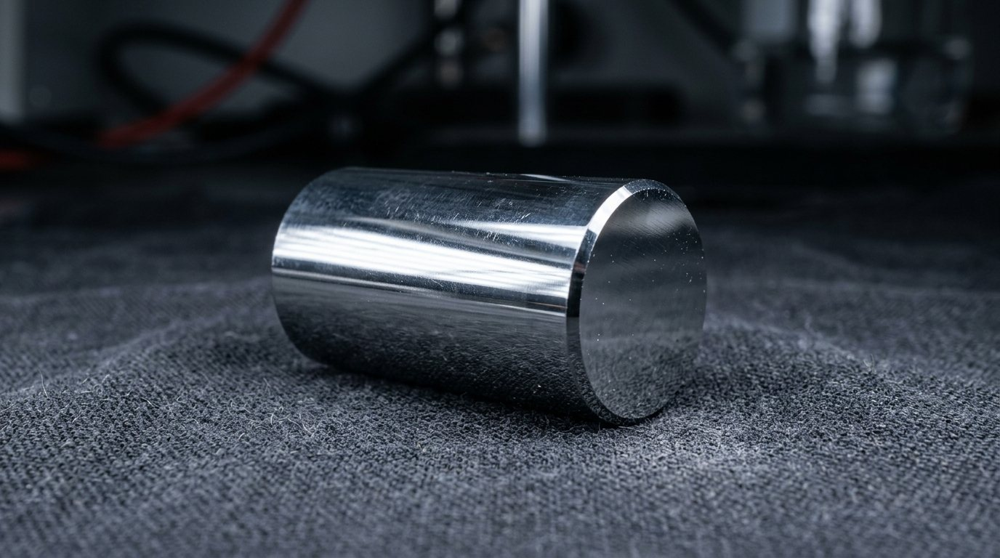
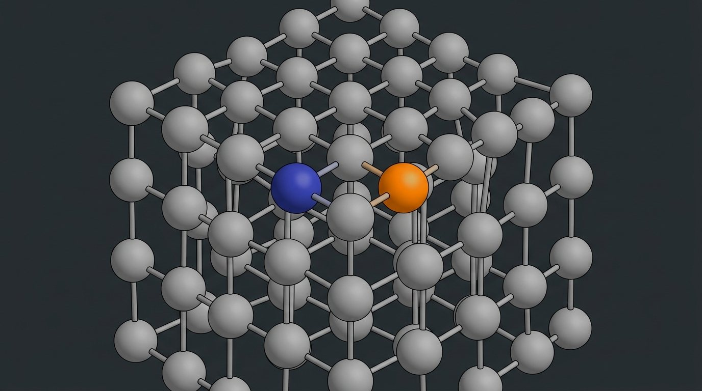
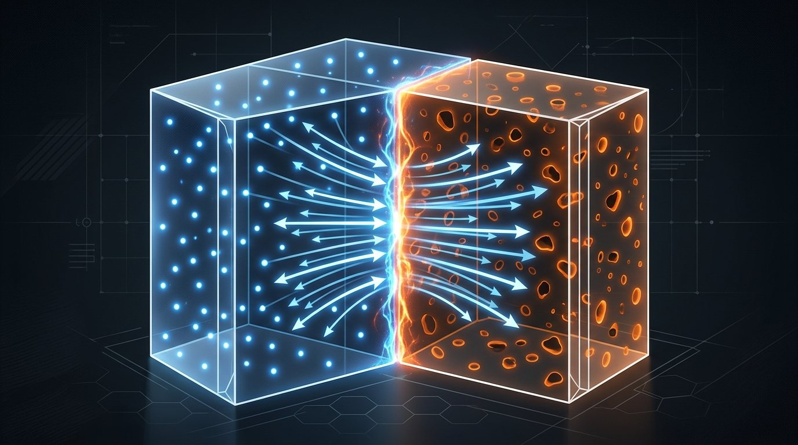
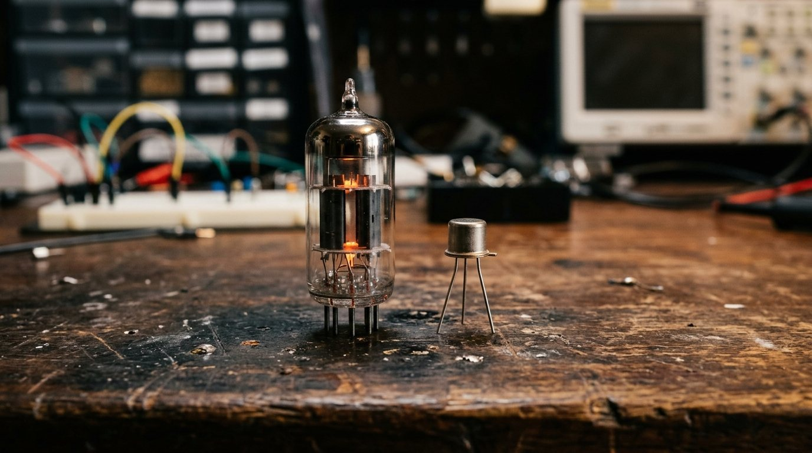
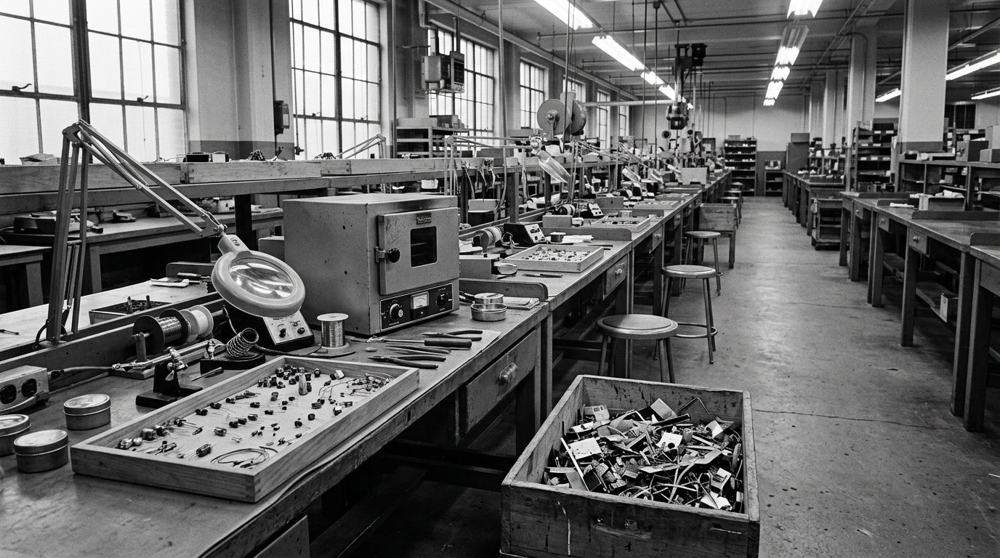
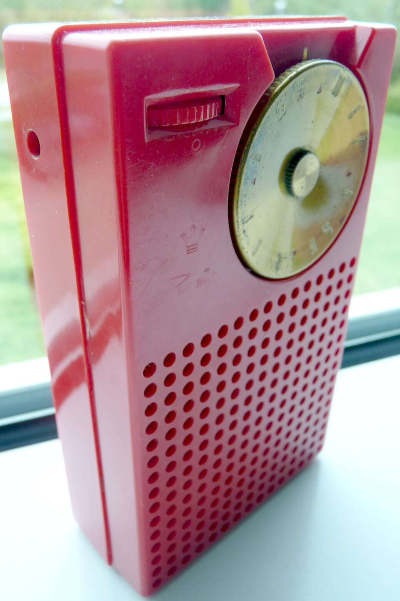

O transistor
De 1947 a 1955. A máquina já é esperta: guarda a própria ordem e entende a nossa língua. Só que ainda é uma sala inteira de válvulas quentes. Quando o áudio pedir, aperte Próximo.
Por que voltamos no tempo. A peça que resolve isso nasceu em 1947, enquanto a etapa anterior ainda acontecia. Ela faz a mesma função de sempre, um interruptor comandado por eletricidade: o que muda é do que ela é feita.
O que a válvula cobra

Ela funciona porque um filamento incandescente solta elétrons no vácuo. Esquentar não é defeito: é o princípio. Daí vem o calor, o consumo, e o filamento que um dia queima igual ao de uma lâmpada.
O material do meio

Metal conduz, vidro não conduz. E existe um grupo no meio do caminho. Um material que decide se conduz é, por definição, um interruptor em potencial. E a série inteira está atrás de um interruptor melhor.
A dopagem

É a mesma pedra nos dois casos. O que muda é o comportamento elétrico, e isso se escolhe na fabricação.
A junção

Já é um componente útil, mas ainda não é o que a série procura: um caminho de mão única não obedece a ninguém. Ele só tem um lado.
Três camadas, e a do meio manda
Num laboratório de telefonia
O objetivo declarado nem era computador: era melhorar amplificador de linha telefônica, porque válvula em central telefônica dava manutenção demais. A peça que muda o computador nasceu resolvendo um problema de telefone.
Lado a lado

Pela primeira vez a peça pode ficar menor sem parar de funcionar. É isso, e não a velocidade, o que muda o resto da história.
Do laboratório à loja

É um padrão que a série já viu e vai ver de novo: a ideia aparece anos antes da peça barata, e quem resolve a fabricação é quem muda o mundo, não quem teve a ideia primeiro.
As primeiras máquinas sem válvula

Um computador que ocupava um salão passa a caber num armário e a rodar sem a manutenção diária de trocar válvula queimada. Não é que ficou mais rápido de cara: ficou confiável e menor. E máquina confiável e menor cabe em mais lugar.
Meados dos anos 1950
E se, em vez de fazer as peças separadas e ligar depois, a gente fizesse todas juntas, já ligadas, no mesmo pedaço de cristal?